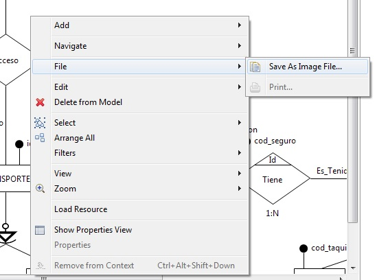
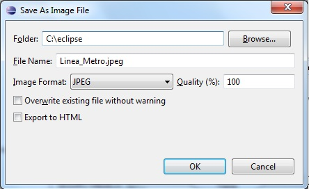

Para exportar o guardar nuestro diagrama como una imagen haremos lo siguiente:
- Sobre el diagrama hacemos Click Derecho->File->Save as Image File...

- En la ventana que nos aparece a continuación haremos lo siguiente:
- Hacemos click en Browser y seleccionamos el directorio donde deseamos
guardar el fichero de la imagen.
- A continuación seleccionamos el formato de imagen que deseamos generar,
en nuestro caso usaremos el formato JPEG, para ello nos vamos al desplegable
Image Format.

- Hacemos click en OK. Si nos vamos al directorio, podremos ver
que se nos ha creado un fichero .jpeg, que contiene una imagen del diagrama al completo.